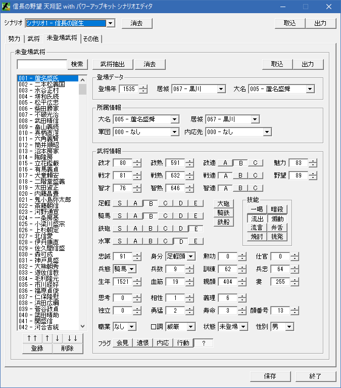

待機武将は、シナリオデータ(sndata.n6p)の武将関連の情報に問い合せることにより、
待機武将の一覧に対してアクセスする手段となります。
ゲーム実行中に待機武将そのもののデータを事前に書き換えることは出来ないため、
原則的にはこの情報は読み取り専用となります。
待機武将が登場した直後に実行されるイベントハンドラの
On_待機武将登場直前 を利用してください。
待機武将が登場した直前に実行されるイベントハンドラの
On_待機武将登場直後 を利用してください。
該当のシナリオにおいて、「待機武将のデータ数」を取得する。
実行するシナリオや、改変シナリオによって、「待機武将」の数が異なるので、
「待機武将一覧」を総なめしたい場合などに利用する。
これらの「待機武将」に関する並びやパラメータは、シナリオエディタで「該当シナリオ」の「未登場武将」タブで確認すると理解が早い。

画像上にてシナリオエディタには間違いがあり、
「独立」が2bit(値0-3) となっているが、これは3bit(値0-7)の間違いです。
シナリオエディタの画像上の「？」となっているものが、この「独立」の残り１ビットに相当しています。
待機武将のうち、すでに登場済みの武将の人数を得る。
この数値は、「次に登場する待機武将」を割り出すのに使える。
待機武将リストは、「シナリオデータからゲームないへと登場してゆく順番」で並んでいます。
例えば、全体で700人の待機武将リストがある場合、200人登場済みであれば、200という数値が返ってきます。
p待機武将戸籍情報[0]～p待機武将戸籍情報[199]で200人ですから
p待機武将戸籍情報[200]は、まだ登場していない「ちょうど次に登場する」予定の人を指すこととなります。
(ただし、700人登場してしまっている場合、p待機武将戸籍情報[699]が700人目ですから、p待機武将戸籍情報[700]はアクセスできません。
気をつけましょう。)
登場済み(厳密には532枠内の)武将の情報を得るのに p武将情報 と p武将戸籍情報 の２種類に分かれていたのと同様に、
待機武将は、「待機武将情報 と 待機武将戸籍情報 と 待機武将登場情報」の３種類に分かれています。
p武将戸籍情報 と同様に、顔番号や姓名が含まれるのは、この待機武将戸籍情報となります。
最も使い勝手がよいのは、やはり顔番号でしょう。
void カスタム::On_プレイヤ担当ターン《メイン画面》() {
int num = Get_待機武将データ数();
auto p待機武将戸籍情報リスト = Get_待機武将戸籍情報リスト();
if (p待機武将戸籍情報リスト) {
for (int t = 0; t < num; t++) {
デバッグ出力 << p待機武将戸籍情報リスト[t].顔番号 << endl;
デバッグ出力 << p待機武将戸籍情報リスト[t]._名字 << p待機武将戸籍情報リスト[t]._名前 << endl;
}
}
}
登場済みの人数もわかっているため、「次に登場する武将の顔番号」を取得することも出来ます。
void カスタム::On_プレイヤ担当ターン《メイン画面》() {
int 登場済の数 = Get_待機武将登場済人数();
auto p待機武将戸籍情報リスト = Get_待機武将戸籍情報リスト();
if (p待機武将戸籍情報リスト) {
// まだ待機している人がいるのか？
// 全員登場していると、「登場済みの数 == 待機武将データ数」となるため判定できる
if (登場済の数 < Get_待機武将データ数()) {
auto next武将 = p待機武将戸籍情報リスト[登場済の数];
デバッグ出力 << "次に登場する予定の武将の姓名:" << next武将._名字 << next武将._名前 << endl;
if (next武将.顔番号 == 顔番号::明智光秀) {
デバッグ出力 << "次は明智光秀が登場するよ" << endl;
}
}
}
}
Get_待機武将戸籍情報リスト()と使い方は同じであり、得られる型が、p武将情報の「武将情報型」と同じプロパティを持つ型なる。
これにより、「該当の待機武将」の詳しい能力を知ることが出来る。
但し、p武将情報 とは異なり、姓名や鉄砲等に対して Get_*** などのラッパー関数などは一切無いので注意すること。
(間違って p武将情報用のラッパー関数を、この待機武将情報に当てはめないこと);
void カスタム::On_プレイヤ担当ターン《メイン画面》() {
int num = Get_待機武将データ数();
auto p待機武将情報リスト = Get_待機武将情報リスト();
if (p待機武将情報リスト) {
for (int t = 0; t < num; t++) {
デバッグ出力 << (int)p待機武将情報リスト[t].兵数 << endl;
}
}
}
Get_待機武将戸籍情報リスト()と使い方は同じであり、得られる型が、登場年・登場時に仕える大名・登場時に居場所となる城などの情報となる。
これにより、「最速で何年に登場するのか、どの大名か、どの城か」などを知ることが出来る。
これらも生データであるため、下の例のように天翔記基準年()を足し込むなど工夫が必要となるだろう。
暦に関する主な所は以上となります。 詳しくは「待機武将情報型.h」などを参照してください。